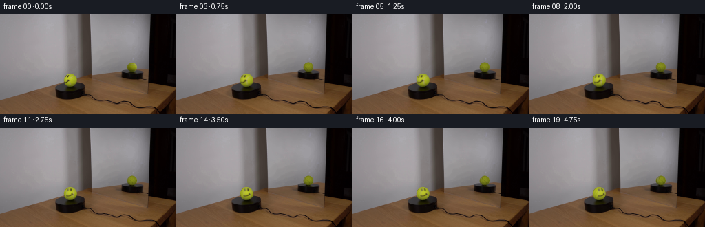
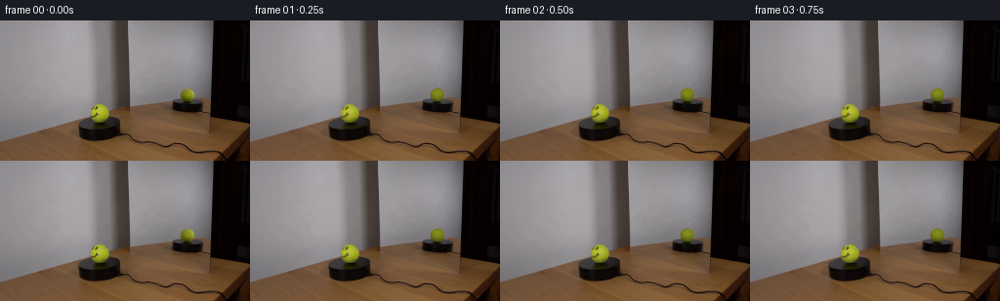
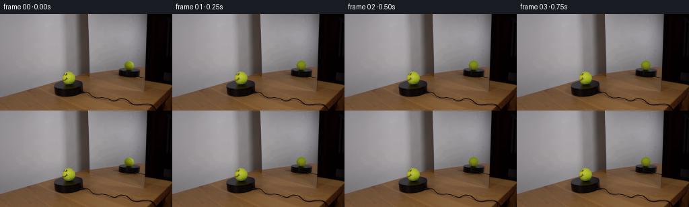
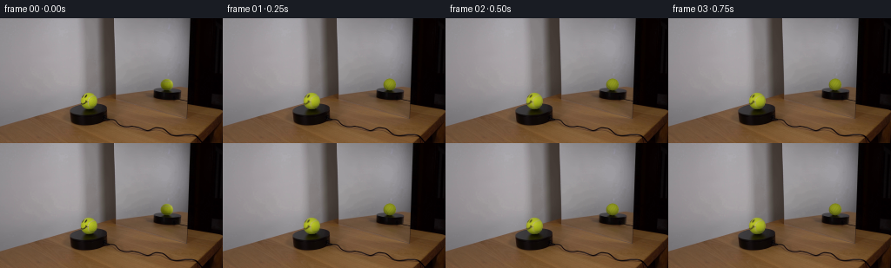
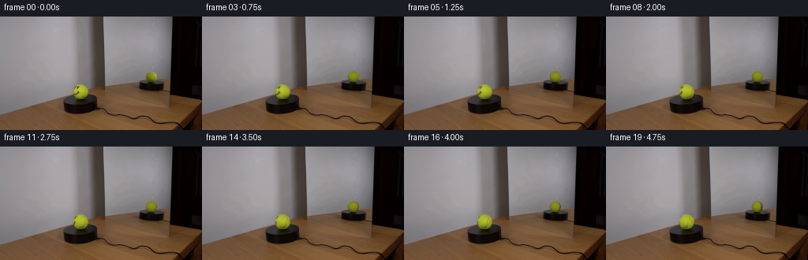

CODING AGENTS AS PIXEL WORLD MODELS
traex/DeepSeek-V4.1-Flash · 0120
点击播放 · 原生 RGB 像素
逐轮保存的候选
回放视频、检查图与代码变化。
每份候选均可单独播放。实际图片检查记录在下方工具轨迹中。
候选 01播放与检查图
点击播放 · 原生 RGB 像素


展开代码变化
--- 上一保存版本
+++ 本次保存版本
@@ -0,0 +1,195 @@
+from pathlib import Path
+
+import numpy as np
+from PIL import Image
+
+import artifact_io
+
+
+ROOT = Path(__file__).resolve().parent
+FRAMES = 20
+
+
+def bilinear(image, x, y):
+ """Sample an RGB float image at a subpixel coordinate."""
+ h, w = image.shape[:2]
+ x = np.clip(x, 0.0, w - 1.001)
+ y = np.clip(y, 0.0, h - 1.001)
+ x0 = np.floor(x).astype(np.int32)
+ y0 = np.floor(y).astype(np.int32)
+ x1 = np.minimum(x0 + 1, w - 1)
+ y1 = np.minimum(y0 + 1, h - 1)
+ fx = (x - x0)[..., None]
+ fy = (y - y0)[..., None]
+ top = image[y0, x0] * (1.0 - fx) + image[y0, x1] * fx
+ bottom = image[y1, x0] * (1.0 - fx) + image[y1, x1] * fx
+ return top * (1.0 - fy) + bottom * fy
+
+
+def shade(nx, ny, nz):
+ """Normalized smooth illumination fitted to the source tennis ball."""
+ value = (
+ 153.10
+ - 2.18 * nx
+ - 32.42 * ny
+ + 17.69 * nz
+ - 18.70 * nx * nx
+ - 39.99 * ny * ny
+ )
+ return np.clip(value / 170.8, 0.34, 1.12)
+
+
+def angle_delta(a, b):
+ return np.arctan2(np.sin(a - b), np.cos(a - b))
+
+
+def synthetic_tennis(nx, ny, nz):
+ """Side/back texture: tennis fuzz with subtle curved seam impressions."""
+ longitude = np.arctan2(nx, nz)
+ latitude = np.arcsin(np.clip(ny, -1.0, 1.0))
+
+ grain = (
+ 1.0
+ + 0.030 * np.sin(13.0 * longitude + 9.0 * latitude)
+ + 0.020 * np.sin(29.0 * longitude - 17.0 * latitude)
+ + 0.014 * np.cos(43.0 * latitude)
+ )
+
+ seam_a = 2.10 + 0.55 * np.sin(2.7 * latitude)
+ seam_b = -1.28 + 0.38 * np.cos(2.2 * latitude)
+ seam = np.exp(-0.5 * (angle_delta(longitude, seam_a) / 0.055) ** 2)
+ seam += 0.72 * np.exp(-0.5 * (angle_delta(longitude, seam_b) / 0.045) ** 2)
+ seam = np.clip(seam, 0.0, 1.0)
+
+ # The seam is a slightly darker olive line rather than bright paint.
+ albedo = np.empty(3, dtype=np.float32)
+ albedo[:] = (174.0, 184.0, 38.0)
+ albedo *= grain
+ albedo *= 1.0 - 0.20 * seam
+ albedo += np.array((4.0, 3.0, -2.0), dtype=np.float32) * seam
+ return albedo
+
+
+def make_texture_sampler(source, center, radius):
+ cx, cy = center
+ samples = []
+ for v in np.linspace(-0.76, 0.76, 17):
+ for u in np.linspace(-0.76, 0.76, 17):
+ if u * u + v * v <= 0.76 * 0.76:
+ z = np.sqrt(max(0.0, 1.0 - u * u - v * v))
+ rgb = bilinear(source, cx + radius * u, cy + radius * v)
+ samples.append(rgb / shade(u, v, z))
+ samples = np.asarray(samples)
+ luminance = samples @ np.array((0.2126, 0.7152, 0.0722), dtype=np.float32)
+ base = np.median(samples[luminance > np.percentile(luminance, 35.0)], axis=0)
+
+ def sample(nx0, ny0, nz0):
+ longitude = np.arctan2(nx0, nz0)
+ synthetic = synthetic_tennis(nx0, ny0, nz0)
+
+ # The source only covers the camera-facing hemisphere. Blend toward the
+ # invented fuzz texture before the projected source pixels become too
+ # compressed to carry useful detail.
+ radial = np.sqrt(max(0.0, 1.0 - nz0 * nz0))
+ source_valid = abs(longitude) < np.deg2rad(88.0) and radial < 0.985
+ if not source_valid:
+ return synthetic
+
+ rgb = bilinear(source, cx + radius * nx0, cy + radius * ny0)
+ albedo = rgb / shade(nx0, ny0, nz0)
+
+ edge = max(
+ np.clip((np.deg2rad(88.0) - abs(longitude)) / np.deg2rad(14.0), 0.0, 1.0),
+ np.clip((0.985 - radial) / 0.12, 0.0, 1.0),
+ )
+ albedo = albedo * edge + synthetic * (1.0 - edge)
+ return np.clip(albedo, 0.0, 255.0)
+
+ return sample, base
+
+
+def render_ball(frame, source, center, radius, yaw_degrees, mirror=False):
+ cx, cy = center
+ sample_texture, _ = make_texture_sampler(source, center, radius)
+ yaw = np.deg2rad(yaw_degrees)
+ cos_yaw = np.cos(yaw)
+ sin_yaw = np.sin(yaw)
+
+ pad = 2
+ x0 = max(0, int(np.floor(cx - radius)) - pad)
+ x1 = min(frame.shape[1], int(np.ceil(cx + radius)) + pad + 1)
+ y0 = max(0, int(np.floor(cy - radius)) - pad)
+ y1 = min(frame.shape[0], int(np.ceil(cy + radius)) + pad + 1)
+
+ offsets = (np.arange(4, dtype=np.float32) + 0.5) / 4.0 - 0.5
+ brightness = 0.735 if mirror else 1.0
+
+ for py in range(y0, y1):
+ for px in range(x0, x1):
+ color = np.zeros(3, dtype=np.float32)
+ covered = 0
+ for oy in offsets:
+ for ox in offsets:
+ nx = (px + ox - cx) / radius
+ ny = (py + oy - cy) / radius
+ rr = nx * nx + ny * ny
+ if rr > 1.0:
+ continue
+ nz = np.sqrt(max(0.0, 1.0 - rr))
+
+ # A positive yaw moves surface features toward screen-right.
+ nx0 = cos_yaw * nx - sin_yaw * nz
+ nz0 = sin_yaw * nx + cos_yaw * nz
+ albedo = sample_texture(nx0, ny, nz0)
+ lit = shade(nx, ny, nz) * brightness
+ color += albedo * lit
+ covered += 1
+
+ if covered:
+ alpha = covered / 16.0
+ rendered = color / covered
+ frame[py, px] = (
+ rendered * alpha + source[py, px] * (1.0 - alpha)
+ )
+ return frame
+
+
+def generate():
+ source = np.asarray(Image.open(ROOT / "first_frame.png").convert("RGB")).astype(
+ np.float32
+ )
+ frames = np.empty((FRAMES, 144, 256, 3), dtype=np.uint8)
+ frames[0] = np.clip(np.rint(source), 0, 255).astype(np.uint8)
+
+ total_yaw = 66.0
+ for index in range(1, FRAMES):
+ progress = index / (FRAMES - 1)
+ eased = 0.82 * progress + 0.18 * progress * progress
+ yaw = total_yaw * eased
+ frame = source.copy()
+
+ # The mirror is a dimmer, smaller view of the opposite side. It stays
+ # free of the printed face while the foreground ball turns.
+ frame = render_ball(
+ frame,
+ source,
+ center=(191.55, 75.90),
+ radius=6.85,
+ yaw_degrees=180.0 + yaw,
+ mirror=True,
+ )
+ frame = render_ball(
+ frame,
+ source,
+ center=(101.80, 95.10),
+ radius=9.30,
+ yaw_degrees=yaw,
+ mirror=False,
+ )
+ frames[index] = np.clip(np.rint(frame), 0, 255).astype(np.uint8)
+
+ return frames
+
+
+if __name__ == "__main__":
+ artifact_io.save(generate(), ROOT)
候选 02播放与检查图
点击播放 · 原生 RGB 像素

展开代码变化
--- 上一保存版本
+++ 本次保存版本
@@ -165,7 +165,7 @@
for index in range(1, FRAMES):
progress = index / (FRAMES - 1)
eased = 0.82 * progress + 0.18 * progress * progress
- yaw = total_yaw * eased
+ yaw = -total_yaw * eased
frame = source.copy()
# The mirror is a dimmer, smaller view of the opposite side. It stays
候选 03播放与检查图
点击播放 · 原生 RGB 像素

展开代码变化
--- 上一保存版本
+++ 本次保存版本
@@ -122,7 +122,7 @@
y1 = min(frame.shape[0], int(np.ceil(cy + radius)) + pad + 1)
offsets = (np.arange(4, dtype=np.float32) + 0.5) / 4.0 - 0.5
- brightness = 0.735 if mirror else 1.0
+ brightness = 0.795 if mirror else 1.0
for py in range(y0, y1):
for px in range(x0, x1):
候选 04播放与检查图
点击播放 · 原生 RGB 像素

展开代码变化
--- 上一保存版本
+++ 本次保存版本
@@ -122,7 +122,7 @@
y1 = min(frame.shape[0], int(np.ceil(cy + radius)) + pad + 1)
offsets = (np.arange(4, dtype=np.float32) + 0.5) / 4.0 - 0.5
- brightness = 0.795 if mirror else 1.0
+ brightness = 0.760 if mirror else 1.0
for py in range(y0, y1):
for px in range(x0, x1):
可观测工具轨迹
实际执行的命令与返回图片。
命令 1exit 0
/bin/bash -c "pwd && rg --files -g '"'!*.pyc'"' -g '"'!__pycache__'"' | sed -n '1,200p'"
命令 2exit 0
/bin/bash -c "printf '%s\\n' '--- prompt.txt ---'; sed -n '1,240p' prompt.txt; printf '%s\\n' '--- GENERATION_RULES.md ---'; sed -n '1,300p' GENERATION_RULES.md"
命令 3exit 0
/bin/bash -c 'ls -la; file first_frame.png 2>/dev/null || true; identify first_frame.png 2>/dev/null || true'
命令 4exit 0
/bin/bash -c "sed -n '1,260p' artifact_io.py; sed -n '1,260p' player_template.html"
命令 5exit 0
/bin/bash -c "python - <<'PY'
from PIL import Image
import numpy as np
im=Image.open('first_frame.png').convert('RGB')
a=np.asarray(im)
print('size',im.size,'mode',im.mode,'dtype',a.dtype,'shape',a.shape)
print('min/max/mean',a.min(),a.max(),a.mean(axis=(0,1)))
# unique colors, common
u,c=np.unique(a.reshape(-1,3),axis=0,return_counts=True)
idx=np.argsort(c)[-30:][::-1]
for i in idx: print(tuple(u[i]), int(c[i]))
# channel/global histogram broad
print('quantiles', [np.quantile(a[...,i],[0,.01,.05,.1,.25,.5,.75,.9,.95,.99,1]) for i in range(3)])
PY"命令 6exit 0
/bin/bash -c "python - <<'PY'
from PIL import Image, ImageOps
import numpy as np
im=Image.open('first_frame.png').convert('RGB')
# downsample 128x72 average; print luminance ascii 100x50
sm=im.resize((96,48),Image.Resampling.BOX)
a=np.asarray(sm).astype(float)
y=0.2126*a[:,:,0]+0.7152*a[:,:,1]+0.0722*a[:,:,2]
chars=' .:-=+*#%@'
for row in y:
print(''.join(chars[min(9,int(v/256*10))] for v in row))
PY"命令 7exit 0
/bin/bash -c "python - <<'PY'
try:
import cv2; print('cv2',cv2.__version__)
except Exception as e: print('no cv2',e)
try:
import scipy; print('scipy',scipy.__version__)
except Exception as e: print('no scipy',e)
PY"命令 8exit 0
/bin/bash -c "python - <<'PY'
from PIL import Image
import numpy as np
from scipy import ndimage as ndi
a=np.asarray(Image.open('first_frame.png').convert('RGB')).astype(float)
# edge image
lum=.2126*a[:,:,0]+.7152*a[:,:,1]+.0722*a[:,:,2]
gx=ndi.sobel(lum,axis=1);gy=ndi.sobel(lum,axis=0);g=np.hypot(gx,gy)
# ascii edge downsample max
h,w=g.shape
for y in range(0,h,3):
print(''.join(' .:-=+*#%@'[min(9,int(g[y:y+3,x:x+3].max()/400*10))] for x in range(0,w,3)))
PY"命令 9exit 0
/bin/bash -c "python - <<'PY'
import cv2, numpy as np
from PIL import Image
im=np.asarray(Image.open('first_frame.png').convert('RGB'))
g=cv2.cvtColor(im,cv2.COLOR_RGB2GRAY)
e=cv2.Canny(g,30,90)
lines=cv2.HoughLinesP(e,1,np.pi/180,threshold=20,minLineLength=15,maxLineGap=5)
print('lines', None if lines is None else len(lines))
if lines is not None:
for x1,y1,x2,y2 in sorted(lines[:,0],key=lambda z:-np.hypot(z[2]-z[0],z[3]-z[1]))[:80]:
print((x1,y1,x2,y2),'len',round(np.hypot(x2-x1,y2-y1),1))
PY"命令 10exit 0
/bin/bash -c "python - <<'PY'
import cv2,numpy as np
from PIL import Image
im=np.asarray(Image.open('first_frame.png').convert('RGB'))
g=cv2.cvtColor(im,cv2.COLOR_RGB2GRAY)
g=cv2.medianBlur(g,5)
cs=cv2.HoughCircles(g,cv2.HOUGH_GRADIENT,dp=1,minDist=15,param1=60,param2=18,minRadius=5,maxRadius=30)
print(cs)
PY"命令 11exit 0
/bin/bash -c "python - <<'PY'
from PIL import Image
import numpy as np
im=Image.open('first_frame.png').convert('RGB')
# crop x65..130 y55..125 scaled ascii based on color categories. 65x70
for y in range(55,126):
s=''
for x in range(65,131):
r,g,b=im.getpixel((x,y))
if max(r,g,b)<25: ch='@'
elif max(r,g,b)<55: ch='#'
elif max(r,g,b)<85: ch='O'
elif max(r,g,b)<115: ch='o'
elif max(r,g,b)<140: ch='+'
elif max(r,g,b)<160: ch='-'
elif max(r,g,b)<180: ch='.'
else: ch=' '
s+=ch
print(f'{y:03d} '+s)
PY"命令 12exit 0
/bin/bash -c "python - <<'PY'
from PIL import Image
import numpy as np
im=Image.open('first_frame.png').convert('RGB')
# Region x=85..116, y=75..110 dump rgb compact hue brightness
for y in range(78,110):
s=''
for x in range(85,118):
r,g,b=im.getpixel((x,y)); yv=.2126*r+.7152*g+.0722*b
# ball likely dark green/yellow; print glyph based rgb difference and lum
ch=' .:-=+*#%@'[min(9,int(yv/200*10))]
s+=ch
print(f'{y:03d} '+s)
PY"命令 13exit 0
/bin/bash -c "python - <<'PY'
from PIL import Image
import numpy as np
im=np.asarray(Image.open('first_frame.png').convert('RGB'))
# Show coordinates around ball with exact RGB values as ANSI? group by classify ball yellow-green vs grayscale
for y in range(80,108):
s=''
for x in range(88,117):
r,g,b=im[y,x].astype(int)
# tennis color: g/r etc
d=(g-r,b-g)
if r>130 and g>120 and b<110: ch='Y' # yellow
elif r>90 and g>80 and b<80: ch='y'
elif r>90 and g>80 and b<100: ch='o'
elif r>120 and g>120 and b>120: ch='.'
elif r<40: ch='@'
elif r<80: ch='#'
elif r<120: ch='-'
else: ch=' '
s+=ch
print(f'{y:03d} '+s)
PY"命令 14exit 0
/bin/bash -c "python - <<'PY'
from PIL import Image
import numpy as np
im=np.asarray(Image.open('first_frame.png').convert('RGB'))
# ball center estimate, print pixel grid rgb values y84:106 x88:116 in compact color code
for y in range(84,106):
print(f'{y:03d}', ' '.join(f'{r:02x}{g:02x}{b:02x}' for r,g,b in im[y,88:116]))
PY"命令 15exit 0
/bin/bash -c "python - <<'PY'
from PIL import Image
import numpy as np
im=Image.open('first_frame.png').convert('RGB')
# mirror crop downsample 2x horizontally, 2x vertically (50x55 chars)
for y in range(0,112,2):
s=''
for x in range(124,226,2):
r,g,b=im.getpixel((x,y)); yv=.2126*r+.7152*g+.0722*b
# use only luminance and marker for yellow
ch=' .:-=+*#%@'[min(9,int(yv/200*10))]
s+=ch
print(f'{y:03d} {s}')
PY"命令 16exit 0
/bin/bash -c "python - <<'PY'
from PIL import Image
import numpy as np, colorsys
im=np.asarray(Image.open('first_frame.png').convert('RGB'))
# classify pixels by color families, print 2x2 blocks for whole image, hsv-based
for y in range(0,144,3):
s=''
for x in range(0,256,3):
r,g,b=im[y:y+3,x:x+3].mean((0,1))/255
mx=max(r,g,b); mn=min(r,g,b); d=mx-mn
h,sat,val=colorsys.rgb_to_hsv(r,g,b)
if val<.12: ch='@'
elif sat<.08: ch='.' if val>.58 else ('-' if val>.4 else ('o' if val>.22 else '#'))
elif h<.05 or h>.95: ch='R'
elif h<.13: ch='O'
elif h<.23: ch='Y'
elif h<.42: ch='G'
elif h<.58: ch='C'
elif h<.75: ch='B'
else: ch='P'
s+=ch
print(f'{y:03d} {s}')
PY"命令 17exit 0
/bin/bash -c "python - <<'PY'
from PIL import Image
import numpy as np
im=np.asarray(Image.open('first_frame.png').convert('RGB')).astype(float)
y=.2126*im[:,:,0]+.7152*im[:,:,1]+.0722*im[:,:,2]
chars=' .:-=+*#%@'
# 128x72 blocks 2x2
for yy in range(0,144,2):
s=''
for xx in range(0,256,2):
v=y[yy:yy+2,xx:xx+2].mean()
s+=chars[min(9,int(v/200*10))]
print(f'{yy:03d} {s}')
PY"命令 18exit 0
/bin/bash -c "python - <<'PY'
import cv2, numpy as np
from PIL import Image
im=np.asarray(Image.open('first_frame.png').convert('RGB'))
g=cv2.cvtColor(im,cv2.COLOR_RGB2GRAY)
# circle fit yellow mask
rgb=im.astype(int); r,gc,b=rgb.transpose(2,0,1)
mask=(gc>r*0.8)&(gc>70)&(b<gc*0.75)&(r>50)
mask[:80]=False; mask[107:]=False; mask[:,:85]=False; mask[:,117:]=False
ys,xs=np.where(mask)
print('ball mask n',len(xs),'bounds',xs.min(),xs.max(),ys.min(),ys.max(),'centroid',xs.mean(),ys.mean())
# estimate circle boundary per row
for yy in range(ys.min(),ys.max()+1):
xx=np.where(mask[yy])[0]
if len(xx): print(yy,xx.min(),xx.max(),len(xx))
PY"命令 19exit 0
/bin/bash -c "python - <<'PY'
from PIL import Image
import numpy as np
im=np.asarray(Image.open('first_frame.png').convert('RGB')).astype(float)
# local variance / high freq to detect texture
from scipy import ndimage as ndi
y=.2126*im[:,:,0]+.7152*im[:,:,1]+.0722*im[:,:,2]
for name,(x0,x1,y0,y1) in {'left':(20,80,20,100),'mirror':(145,205,20,80),'ball':(94,110,87,103),'platform':(80,130,108,123)}.items():
a=y[y0:y1,x0:x1]
print(name,'mean',a.mean(),'std',a.std(),'grad',np.hypot(ndi.sobel(a,0),ndi.sobel(a,1)).mean())
PY"命令 20exit 0
/bin/bash -c "python - <<'PY'
from PIL import Image
import numpy as np
im=np.asarray(Image.open('first_frame.png').convert('RGB')).astype(float)
# mask yellow ball with generous threshold; fit circle algebraic
r,g,b=im.transpose(2,0,1)
mask=(g>r*.8)&(g>65)&(b<g*.75)&(r>40)
mask[:82]=0; mask[108:]=0; mask[:,:88]=0; mask[:,118:]=0
ys,xs=np.where(mask)
# fit circle x"'^2+y''^2 + A x + B y + C =0
A=np.c_[xs,ys,np.ones(len(xs))]; z=-(xs*xs+ys*ys)
coef=np.linalg.lstsq(A,z,rcond=None)[0]
cx,cy=-coef[0]/2,-coef[1]/2; rad=np.sqrt(cx*cx+cy*cy-coef[2])
print('"'fit',cx,cy,rad)
# weighted circle from boundaries? count mask
for y in range(83,108):
xx=np.where(mask[y])[0]
if len(xx): print(y,xx.min(),xx.max(),len(xx))
PY"命令 21exit 0
/bin/bash -c "python - <<'PY'
from PIL import Image
import numpy as np
im=np.asarray(Image.open('first_frame.png').convert('RGB')).astype(float)
y=.2126*im[:,:,0]+.7152*im[:,:,1]+.0722*im[:,:,2]
for yy in range(84,107):
print(f'{yy:03d}', ' '.join(f'{int(v):03d}' for v in y[yy,88:116]))
PY"命令 22exit 0
/bin/bash -c "python - <<'PY'
from PIL import Image
import numpy as np
im=np.asarray(Image.open('first_frame.png').convert('RGB')).astype(float)
y=.2126*im[:,:,0]+.7152*im[:,:,1]+.0722*im[:,:,2]
# save text full frame at 1 pixel block? find circle boundary by local average, use grid y=78..108 x=86..118 with gray values 2-digit
for yy in range(78,108):
print(f'{yy:03d}', ' '.join(f'{int(y[yy,xx]):03d}' for xx in range(86,118)))
PY"命令 23exit 0
/bin/bash -c "python - <<'PY'
from PIL import Image
import numpy as np
im=np.asarray(Image.open('first_frame.png').convert('RGB')).astype(float)
r,g,b=im.transpose(2,0,1)
for yy in range(84,107):
s=''
for xx in range(88,116):
R,G,B=r[yy,xx],g[yy,xx],b[yy,xx]
# chroma ball pixels
if G-R>4 and G-B>30: ch='Y'
elif G-B>15 and G-R>-10: ch='y'
elif max(R,G,B)<50: ch='@'
elif max(R,G,B)<85: ch='#'
elif max(R,G,B)<120: ch='-'
elif max(R,G,B)<150: ch='.'
else: ch=' '
s+=ch
print(f'{yy:03d} {s}')
PY"命令 24exit 0
/bin/bash -c "python - <<'PY'
import numpy as np
from PIL import Image
im=np.asarray(Image.open('first_frame.png').convert('RGB'))
r,g,b=im.astype(int).transpose(2,0,1)
mask=(g-r>4)&(g-b>30)
# connected comps in ball crop
from scipy.ndimage import label
lab,n=label(mask[80:108,88:118])
for i in range(1,n+1):
ys,xs=np.where(lab==i)
if len(xs)>3: print(i,len(xs),xs.min()+88,xs.max()+88,ys.min()+80,ys.max()+80)
PY"命令 25exit 0
/bin/bash -c "python - <<'PY'
from PIL import Image
import numpy as np
im=np.asarray(Image.open('first_frame.png').convert('RGB'))
r,g,b=im.astype(int).transpose(2,0,1)
# use broad yellow mask and print crop indices scaled to 2x text coordinate
mask=(g-b>15)&(g>50)&(r>40)
for yy in range(84,107):
s=''
for xx in range(88,116):
s += 'X' if mask[yy,xx] else ('.' if max(im[yy,xx])>90 else '#')
print(f'{yy:03d} {s}')
PY"命令 26exit 0
/bin/bash -c "python - <<'PY'
from PIL import Image
import numpy as np
im=np.asarray(Image.open('first_frame.png').convert('RGB')).astype(int)
# crop coordinates around mirror reflection. show color-coded ball yellow vs rest and luminance
for yy in range(76,103):
s=''
for xx in range(175,220):
r,g,b=im[yy,xx]
if g-b>15 and g>50 and r>40: ch='Y'
else:
v=.2126*r+.7152*g+.0722*b
ch=' .:-=+*#%@'[min(9,int(v/200*10))]
s+=ch
print(f'{yy:03d} {s}')
PY"命令 27exit 0
/bin/bash -c "python - <<'PY'
import cv2,numpy as np
from PIL import Image
im=np.asarray(Image.open('first_frame.png').convert('RGB'))
g=cv2.cvtColor(im,cv2.COLOR_RGB2GRAY)
for p2 in [18,14,12,10,8]:
for region in [(130,0,218,105),(160,50,218,105)]:
x0,y0,x1,y1=region
cs=cv2.HoughCircles(cv2.medianBlur(g[y0:y1,x0:x1],3),cv2.HOUGH_GRADIENT,dp=1,minDist=8,param1=40,param2=p2,minRadius=3,maxRadius=18)
print('p2',p2,'reg',region,None if cs is None else np.round(cs[0],1).tolist())
PY"命令 28exit 0
/bin/bash -c "python - <<'PY'
from PIL import Image
import numpy as np
im=np.asarray(Image.open('first_frame.png').convert('RGB')).astype(float)
# print mirror local RGB avg for key regions to see ball vs reflection shape
for yy in range(72,101):
s=''
for xx in range(178,218):
r,g,b=im[yy,xx]
# reflect ball likely olive/yellow compared to gray; use g-b positive
d=g-b
if d>28: ch='Y'
elif d>20: ch='y'
elif d>12: ch='o'
else:
v=.2126*r+.7152*g+.0722*b
ch=' .:-=+*#%@'[min(9,int(v/200*10))]
s+=ch
print(f'{yy:03d} {s}')
PY"命令 29exit 0
/bin/bash -c "python - <<'PY'
from PIL import Image
import numpy as np
im=np.asarray(Image.open('first_frame.png').convert('RGB'))
# Print hex crop around mirror ball/reflection y72..101 x180..214 every pixel
for yy in range(72,102):
print(f'{yy:03d}', ' '.join(f'{r:02x}{g:02x}{b:02x}' for r,g,b in im[yy,180:215]))
PY"命令 30exit 0
/bin/bash -c "python - <<'PY'
from PIL import Image
import numpy as np
im=np.asarray(Image.open('first_frame.png').convert('RGB')).astype(float)
# Save a temporary enlarged crop for local visual inspection via sixel impossible; use luminance and known lines.
# Try edge-based ellipse detection: region mirror reflection likely x194..213,y79..101. inspect RGB averages by row.
for yy in range(74,102):
print(yy, np.round(im[yy,195:214].mean(0),1), np.round(im[yy,180:195].mean(0),1), np.round(im[yy,214:225].mean(0),1))
PY"命令 31exit 0
/bin/bash -c "python - <<'PY'
from PIL import Image
import numpy as np
im=np.asarray(Image.open('first_frame.png').convert('RGB'))
# make crops upscaled using nearest/lanczos for inspection saved .tmp
for name,box in [('ball',(82,76,120,112)),('mirror',(160,55,226,105)),('all',(0,0,256,144))]:
c=Image.fromarray(im).crop(box)
c.resize((c.width*8,c.height*8),Image.Resampling.NEAREST).save(f'.tmp/{name}_nearest.png')
c.resize((c.width*8,c.height*8),Image.Resampling.LANCZOS).save(f'.tmp/{name}_smooth.png')
print('saved')
PY"命令 32exit 0
/bin/bash -c "python - <<'PY'
import cv2,numpy as np
from PIL import Image
im=np.asarray(Image.open('first_frame.png').convert('RGB'))
# BGR and ORB/Harris? Find circles in mirror with aggressive params report candidates near ball x194..212 y78..101
g=cv2.cvtColor(im,cv2.COLOR_RGB2GRAY)
for method in ['HOUGH_GRADIENT','HOUGH_GRADIENT_ALT']:
try:
if method=='HOUGH_GRADIENT':
cs=cv2.HoughCircles(g,cv2.HOUGH_GRADIENT,dp=.5,minDist=5,param1=20,param2=5,minRadius=3,maxRadius=20)
else:
cs=cv2.HoughCircles(g,cv2.HOUGH_GRADIENT_ALT,dp=1.5,minDist=5,param1=100,param2=.3,minRadius=3,maxRadius=20)
print(method, None if cs is None else np.round(cs[0],2).tolist()[:100])
except Exception as e: print(e)
PY"命令 33exit 0
/bin/bash -c "python - <<'PY'
import cv2,numpy as np
from PIL import Image
im=np.asarray(Image.open('first_frame.png').convert('RGB'))
# detect ellipses contours mirror region
g=cv2.cvtColor(im,cv2.COLOR_RGB2GRAY)
for thr1,thr2 in [(10,30),(20,50),(40,100)]:
e=cv2.Canny(g,thr1,thr2)
contours,_=cv2.findContours(e,cv2.RETR_LIST,cv2.CHAIN_APPROX_SIMPLE)
out=[]
for c in contours:
if len(c)<5: continue
x,y,w,h=cv2.boundingRect(c)
if 175<x<220 and 60<y<105 and 4<w<25 and 4<h<25:
area=cv2.contourArea(c); per=cv2.arcLength(c,True)
if area>10:
(cx,cy),(a,b),ang=cv2.fitEllipse(c)
out.append((round(area,1),x,y,w,h,round(cx,1),round(cy,1),round(a,1),round(b,1),round(ang,1)))
print(thr1,thr2,sorted(out,reverse=True)[:30])
PY"命令 34exit 0
/bin/bash -c "python - <<'PY'
from PIL import Image
import numpy as np
im=np.asarray(Image.open('first_frame.png').convert('RGB')).astype(int)
# calculate saturation/hue of likely mirror ball pixels x195..214 y72..100, print with chroma classes
for yy in range(70,102):
s=''
for xx in range(178,222):
r,g,b=im[yy,xx]
mx=max(r,g,b); mn=min(r,g,b); chrom=mx-mn
if chrom>30 and g>r*.9 and b<g*.8: ch='Y'
elif chrom>20 and g>=r and b<g*.9: ch='y'
elif chrom>10 and r>g*1.15 and g>b*1.05: ch='O'
elif chrom>10 and b>g*1.15: ch='B'
else:
v=.2126*r+.7152*g+.0722*b
ch=' .:-=+*#%@'[min(9,int(v/200*10))]
s+=ch
print(f'{yy:03d} {s}')
PY"命令 35exit 0
/bin/bash -c "python - <<'PY'
from PIL import Image
import numpy as np
im=np.asarray(Image.open('first_frame.png').convert('RGB')).astype(int)
# print normalized hue using RGB chroma in mirror ball crop only, symbols: W gray, R red/orange, Y yellow/green, B blue
for yy in range(76,100):
s=''
for xx in range(184,220):
r,g,b=im[yy,xx]
if b>g+8: ch='B'
elif g>b+15 and g>r+4: ch='Y'
elif r>g+10 and g>b+5: ch='R'
elif r>g+4: ch='r'
else: ch='.'
s+=ch
print(f'{yy:03d} {s}')
PY"命令 36exit 0
/bin/bash -c "python - <<'PY'
from PIL import Image
import numpy as np
im=np.asarray(Image.open('first_frame.png').convert('RGB')).astype(int)
# Classify only high sat yellow/green direct ball and mirror crop. save masks
r,g,b=im.transpose(2,0,1)
yellow=(g-r>3)&(g-b>25)&(r>45)
for name,box in [('ball',(85,80,120,110)),('mirror',(175,65,225,105))]:
x0,y0,x1,y1=box
arr=(yellow[y0:y1,x0:x1]*255).astype('uint8')
Image.fromarray(arr).resize(((x1-x0)*8,(y1-y0)*8),Image.Resampling.NEAREST).save(f'.tmp/{name}_mask.png')
print('saved')
PY"命令 37exit 0
/bin/bash -c "python - <<'PY'
from PIL import Image
import numpy as np
im=np.asarray(Image.open('first_frame.png').convert('RGB')).astype(float)
r,g,b=im.transpose(2,0,1)
# HSV hue/val from cv2 on RGB
import cv2
hsv=cv2.cvtColor(im.astype('uint8'),cv2.COLOR_RGB2HSV)
H,S,V=[hsv[:,:,i] for i in range(3)]
for yy in range(80,107):
s=''
for xx in range(88,116):
h,ss,v=H[yy,xx],S[yy,xx],V[yy,xx]
if ss>70 and 20<=h<=55: ch='Y'
elif ss>35 and 20<=h<=60: ch='y'
elif v<50: ch='@'
elif v<90: ch='#'
elif v<130: ch='-'
elif v<165: ch='.'
else: ch=' '
s+=ch
print(f'{yy:03d} {s}')
PY"命令 38exit 0
/bin/bash -c "python - <<'PY'
from PIL import Image
import numpy as np, cv2
im=np.asarray(Image.open('first_frame.png').convert('RGB'))
hsv=cv2.cvtColor(im,cv2.COLOR_RGB2HSV); H,S,V=cv2.split(hsv)
for yy in range(84,107):
s=''
for xx in range(88,118):
h,ss,v=int(H[yy,xx]),int(S[yy,xx]),int(V[yy,xx])
if v<50: ch='@'
elif ss>80 and 20<=h<=55: ch='Y'
elif ss>50 and 15<=h<=60: ch='y'
elif ss>20: ch='o'
elif v<90: ch='#'
elif v<130: ch='-'
elif v<165: ch='.'
else: ch=' '
s+=ch
print(f'{yy:03d} {s}')
PY"命令 39exit 0
/bin/bash -c "python - <<'PY'
from PIL import Image
import numpy as np
im=np.asarray(Image.open('first_frame.png').convert('RGB')).astype(float)
y=.2126*im[:,:,0]+.7152*im[:,:,1]+.0722*im[:,:,2]
cx,cy=101.8,95.0; r=9.2
print('ball luma threshold')
for yy in range(84,107):
s=''
for xx in range(91,114):
dx=(xx-cx);dy=(yy-cy); inside=dx*dx+dy*dy<=r*r
v=y[yy,xx]
if not inside: ch=' '
elif v<50: ch='@'
elif v<80: ch='#'
elif v<110: ch='O'
elif v<135: ch='o'
elif v<155: ch='.'
elif v<175: ch='-'
else: ch='+'
s+=ch
print(f'{yy:03d} {s}')
PY"命令 40exit 0
/bin/bash -c "python - <<'PY'
import cv2,numpy as np
from PIL import Image
im=np.asarray(Image.open('first_frame.png').convert('RGB'))
g=cv2.cvtColor(im,cv2.COLOR_RGB2GRAY)
# find local dark marks within direct ball
for y in range(86,105):
for x in range(93,111):
if g[y,x]<80:
print((x,y),int(g[y,x]),tuple(im[y,x]))
PY"命令 41exit 0
/bin/bash -c "python - <<'PY'
from PIL import Image
import numpy as np
im=np.asarray(Image.open('first_frame.png').convert('RGB')).astype(float)
# for each row direct ball estimate yellow horizontal extent and texture mean
r,g,b=im.transpose(2,0,1); m=(g-r>3)&(g-b>25)&(r>45)
for yy in range(85,106):
xs=np.where(m[yy,85:120])[0]+85
if len(xs): print(yy,xs.min(),xs.max(),len(xs), round(xs.mean(),1))
PY"命令 42exit 0
/bin/bash -c "python - <<'PY'
from PIL import Image
import numpy as np
im=np.asarray(Image.open('first_frame.png').convert('RGB')).astype(float)
# See average RGB in ball radial shells, and texture at coordinates. derive base shading.
cx,cy=101.7,95.0;r=9.2
for yy in range(85,106):
s=''
for xx in range(91,113):
d=np.hypot(xx-cx,yy-cy)
if d<9.2:
R,G,B=im[yy,xx]
# hue shift R-G, G-B
a=R-G;c=G-B
if a<-5 and c>25: ch='Y'
elif a<-2 and c>20: ch='y'
elif a>3 and c<20: ch='o'
elif c>15: ch='g'
elif max(R,G,B)<100: ch='#'
else: ch='.'
else:ch=' '
s+=ch
print(f'{yy:03d} {s}')
PY"命令 43exit 0
/bin/bash -c "python - <<'PY'
from PIL import Image
import numpy as np
im=np.asarray(Image.open('first_frame.png').convert('RGB')).astype(float)
# print actual crop using colored terminal truecolor? maybe ANSI output can see if rendered. generate 20x20 chars with bg colors
# We'll rely on numerical stats. Estimate mirror reflection ball location from radial ball-colored structure.
r,g,b=im.transpose(2,0,1)
# metrics: chroma
for yy in range(70,100):
vals=[]
for xx in range(178,220):
R,G,B=im[yy,xx]
# saturation
vals.append(max(R,G,B)-min(R,G,B))
print(yy, int(max(vals)), int(np.argmax(vals)+178), int(np.mean(vals)))
PY"命令 44exit 0
/bin/bash -c "python - <<'PY'
import numpy as np
from PIL import Image
from scipy import ndimage as ndi
im=np.asarray(Image.open('first_frame.png').convert('RGB')).astype(float)
# chromatic residual to local grayscale base: use saturation. Find connected yellow structure x180..215 y68..102
mx=im.max(2);mn=im.min(2);sat=(mx-mn)
mask=(sat>35)&(im[:,:,1]>im[:,:,2]+20)
mask[:66]=0;mask[103:]=0;mask[:,:175]=0;mask[:,220:]=0
lab,n=ndi.label(mask)
for i in range(1,n+1):
ys,xs=np.where(lab==i)
if len(xs)>5: print(i,len(xs),xs.min(),xs.max(),ys.min(),ys.max(),np.round(im[ys,xs].mean(0),1))
PY"命令 45exit 0
/bin/bash -c "python - <<'PY'
from PIL import Image
import numpy as np
im=np.asarray(Image.open('first_frame.png').convert('RGB')).astype(float)
# radial structure center candidates around 205,87. print polar correlation: for each center/r, sample yellow residual
for cx in range(198,211):
for cy in range(82,93):
# ring consistency of high saturation around radius 3..15
vals=[]
for rr in range(4,15):
ss=[]
for t in np.linspace(0,2*np.pi,24,endpoint=False):
x=int(round(cx+rr*np.cos(t))); y=int(round(cy+rr*np.sin(t)))
R,G,B=im[y,x]; ss.append(max(R,G,B)-min(R,G,B))
vals.append(np.mean(ss))
score=np.std(vals)
if score<10: print(cx,cy,round(np.mean(vals),1),round(score,1))
PY"命令 46exit 0
/bin/bash -c "python - <<'PY'
from PIL import Image
import numpy as np
im=np.asarray(Image.open('first_frame.png').convert('RGB')).astype(int)
# print R,G,B separately in mirror crop at x198..216 y78..96 as 3-char quantized colors
for yy in range(78,96):
print(f'{yy:03d}', ' '.join(f'{r//16:x}{g//16:x}{b//16:x}' for r,g,b in im[yy,198:217]))
PY"命令 47exit 0
/bin/bash -c "python - <<'PY'
from PIL import Image
import numpy as np
im=np.asarray(Image.open('first_frame.png').convert('RGB')).astype(int)
# mirror reflect yellow ball likely at x205..216 y80..94, base dark. inspect difference from median baseline in row
for yy in range(78,97):
row=im[yy,196:220]
# print luma and chroma
print(yy,' '.join(f'{(.2126*r+.7152*g+.0722*b):3.0f}/{max(r,g,b)-min(r,g,b):2d}' for r,g,b in row))
PY"命令 48exit 0
/bin/bash -c "python - <<'PY'
from PIL import Image
import numpy as np
im=np.asarray(Image.open('first_frame.png').convert('RGB')).astype(float)
# direct ball actual luma with boundary normalized. Fit circle to luminance edge
# print 1 pixel crop with x coords every 2 to identify smile black markings vs seams
for yy in range(86,105):
print(f'{yy:03d}', ''.join('@' if .2126*r+.7152*g+.0722*b<75 and np.hypot(xx-101.7,yy-95)<9.4 else ('Y' if g-b>25 and g-r>3 else '.') for xx,r,g,b in [(xx,*im[yy,xx]) for xx in range(92,112)]))
PY"命令 49exit 0
/bin/bash -c "python - <<'PY'
from PIL import Image
import numpy as np
im=np.asarray(Image.open('first_frame.png').convert('RGB')).astype(float)
r,g,b=im.transpose(2,0,1)
# print luminance numeric at ball x92..112 y86..104; use marks relative to local shell baseline approximate
for yy in range(86,105):
print(f'{yy:03d}', ''.join('@' if np.hypot(xx-101.7,yy-95)<9.4 and (.2126*r[yy,xx]+.7152*g[yy,xx]+.0722*b[yy,xx])<85 else ('+' if np.hypot(xx-101.7,yy-95)<9.4 else ' ') for xx in range(91,113)))
PY"命令 50exit 0
/bin/bash -c "python - <<'PY'
from PIL import Image
import numpy as np
im=np.asarray(Image.open('first_frame.png').convert('RGB')).astype(float)
# Check likely ball is perhaps rotated smiley face is just subtle; display local contrast with Laplacian inside circle.
from scipy import ndimage as ndi
y=.2126*im[:,:,0]+.7152*im[:,:,1]+.0722*im[:,:,2]
base=ndi.gaussian_filter(y,1.8)
hp=y-base
for yy in range(86,105):
s=''
for xx in range(91,113):
if np.hypot(xx-101.7,yy-95)<9.2:
v=hp[yy,xx]
s += '#' if v<-8 else ('+' if v<-3 else ('-' if v>3 else '.'))
else:s+=' '
print(f'{yy:03d} {s}')
PY"命令 51exit 0
/bin/bash -c "python - <<'PY'
from PIL import Image
import numpy as np
im=np.asarray(Image.open('first_frame.png').convert('RGB')).astype(float)
# Actual mask based on hue: derive texture by local hue deviation. Print only yellow mask and local dark holes. Need understand seam path maybe original generated low-res.
# HSV display
import cv2
hsv=cv2.cvtColor(im.astype('uint8'),cv2.COLOR_RGB2HSV)
H,S,V=cv2.split(hsv)
for yy in range(86,105):
s=''
for xx in range(91,113):
if np.hypot(xx-101.7,yy-95)<9.2:
h,ss,v=H[yy,xx],S[yy,xx],V[yy,xx]
if v<80 and ss>50: ch='#'
elif ss<35: ch='.'
elif h<20: ch='O'
elif h<32: ch='Y'
elif h<45: ch='G'
else: ch='g'
else:ch=' '
s+=ch
print(f'{yy:03d} {s}')
PY"命令 52exit 0
/bin/bash -c "python - <<'PY'
from PIL import Image
import numpy as np
im=np.asarray(Image.open('first_frame.png').convert('RGB')).astype(float)
# Detect ball's smiley likely black eyes/mouth. Fit circle then unwrap texture? We can approximate from visible.
# Create quick colorized terminal using block chars? no. Print 18x18 rgb as ANSI background may render in tool output not visual here.
# Look at local difference from smooth shading only in hue. print dark residual coordinates
from scipy import ndimage as ndi
y=.2126*im[:,:,0]+.7152*im[:,:,1]+.0722*im[:,:,2]
# circular fitted ball radius ~9.3. print residual values inside (not abs)
base=ndi.gaussian_filter(y,1.4)
for yy in range(87,104):
print(f'{yy:03d}', ' '.join(f'{int(y[yy,xx]-base[yy,xx]):+03d}' for xx in range(94,111) if np.hypot(xx-101.7,yy-95)<9.2))
PY"命令 53exit 0
/bin/bash -c "python - <<'PY'
from PIL import Image
import numpy as np
im=np.asarray(Image.open('first_frame.png').convert('RGB')).astype(float)
# print annotated mask with x indices around direct ball to locate black smiley
for yy in range(86,106):
s=''
for xx in range(90,114):
if np.hypot(xx-101.7,yy-95)<9.2:
R,G,B=im[yy,xx]
# dark relative to typical ball shading: use max channel under 75
if max(R,G,B)<75: ch='#'
elif G-R<0 and G-B>30: ch='y'
elif G-B>35: ch='Y'
elif G-B>15: ch='g'
elif max(R,G,B)<110: ch='O'
else: ch='.'
else: ch=' '
s+=ch
print(f'{yy:03d} {s}')
print('x ',''.join(str((x//10)%10) for x in range(90,114)))
print(' ',''.join(str(x%10) for x in range(90,114)))
PY"命令 54exit 0
/bin/bash -c "python - <<'PY'
from PIL import Image
import numpy as np
im=np.asarray(Image.open('first_frame.png').convert('RGB')).astype(float)
# attempt find dark smiley from HSV/hue. print exact values in grid x96..107 y88..99
for yy in range(87,100):
print(f'{yy:03d}', ' '.join(f'{int(np.mean(im[yy,xx])):3d}' for xx in range(94,111)))
PY"命令 55exit 0
/bin/bash -c "python - <<'PY'
from PIL import Image
import numpy as np
im=np.asarray(Image.open('first_frame.png').convert('RGB')).astype(float)
# Ball rim fit from yellow mask lower/upper arcs manually. print x/y table for radius 9.3 center 101.7,95
cx,cy,r=101.7,95.0,9.2
for y in range(86,105):
xs=[]
for x in range(90,114):
if np.hypot(x-cx,y-cy)<r: xs.append(x)
if xs: print(y,min(xs),max(xs))
PY"命令 56exit 0
/bin/bash -c "python - <<'PY'
from PIL import Image
import numpy as np
im=np.asarray(Image.open('first_frame.png').convert('RGB')).astype(float)
# Print RGB at key pixels around ball
for y in range(86,105):
print(y, [tuple(im[y,x].astype(int)) for x in range(93,111)])
PY"命令 57exit 0
/bin/bash -c "python - <<'PY'
from PIL import Image
import numpy as np
im=np.asarray(Image.open('first_frame.png').convert('RGB')).astype(float)
# Extract direct ball circular area and project differences in polar. Fit center precisely by minimizing radial transition.
# show low-pass brightness after removing smooth radial shading by fit polynomial in x,y to estimate smiley dark shapes.
from scipy import ndimage as ndi
Y=.2126*im[:,:,0]+.7152*im[:,:,1]+.0722*im[:,:,2]
cx,cy=101.7,95.0
ys,xs=np.mgrid[0:144,0:256]
rr=np.hypot(xs-cx,ys-cy)
sel=(rr<8.5)
X=(xs-cx)/9.2; Yc=(ys-cy)/9.2
# poly basis 1,x,y,x2,xy,y2, x3...
A=np.c_[np.ones(sel.sum()),X[sel],Yc[sel],X[sel]**2,X[sel]*Yc[sel],Yc[sel]**2]
coef=np.linalg.lstsq(A,Y[sel],rcond=None)[0]
pred=A@coef
res=Y[sel]-pred
print('coef',coef,'res std',res.std())
# print signed residual grid in circle
for yy in range(87,104):
s=''
for xx in range(93,111):
if rr[yy,xx]<8.5:
Xv=(xx-cx)/9.2;Yv=(yy-cy)/9.2
aa=np.array([1,Xv,Yv,Xv**2,Xv*Yv,Yv**2])@coef
rv=Y[yy,xx]-aa
s+= '#' if rv<-12 else ('+' if rv<-5 else ('-' if rv>6 else '.'))
else:s+=' '
print(f'{yy:03d} {s}')
PY"命令 58exit 0
/bin/bash -c "python - <<'PY'
from PIL import Image
import numpy as np
im=np.asarray(Image.open('first_frame.png').convert('RGB')).astype(float)
# Mirror yellow reflection seems x205..214 y80..94. Use radial shape fitting in that region subtract row background from left.
r,g,b=im.transpose(2,0,1)
# output score g-b and luma grid x202..218 y78..96
for yy in range(78,97):
print(f'{yy:03d}', ' '.join(f'{int(g[yy,xx]-b[yy,xx]):2d}/{int((.2126*r[yy,xx]+.7152*g[yy,xx]+.0722*b[yy,xx])):3d}' for xx in range(202,219)))
PY"命令 59exit 0
/bin/bash -c "python - <<'PY'
from PIL import Image
import numpy as np
im=np.asarray(Image.open('first_frame.png').convert('RGB')).astype(int)
r,g,b=im.transpose(2,0,1)
for yy in range(64,88):
print(f'{yy:03d}', ' '.join(f'{int(g[yy,xx]-b[yy,xx]):3d}' for xx in range(176,204)))
PY"命令 60exit 0
/bin/bash -c "python - <<'PY'
from PIL import Image
import numpy as np
im=np.asarray(Image.open('first_frame.png').convert('RGB')).astype(int)
r,g,b=im.transpose(2,0,1)
# mirror ball area x184..207 y68..88. print g-b and brightness
for yy in range(68,88):
print(f'{yy:03d}', ' '.join(f'{int(g[yy,xx]-b[yy,xx]):3d}' for xx in range(184,207)))
PY"命令 61exit 0
/bin/bash -c "python - <<'PY'
from PIL import Image
import numpy as np
im=np.asarray(Image.open('first_frame.png').convert('RGB')).astype(int)
r,g,b=im.transpose(2,0,1)
# direct ball fit edge from high gradient circle? print g-b row width and midpoint
for yy in range(84,106):
vals=[]
for xx in range(88,117):
if g[yy,xx]-b[yy,xx]>12: vals.append(xx)
if vals: print(yy,min(vals),max(vals),round(np.mean(vals),1),len(vals))
PY"命令 62exit 0
/bin/bash -c "python - <<'PY'
from PIL import Image
import numpy as np
im=np.asarray(Image.open('first_frame.png').convert('RGB')).astype(float)
# Compare mirror x208..215 baseline weird rectangle: likely actual reflection at x208..215, y78..94, but uniform gray? inspect exact colors and local smoothness
# Print luminance x175..218 y68..101 as characters 2-level
Y=.2126*im[:,:,0]+.7152*im[:,:,1]+.0722*im[:,:,2]
for yy in range(68,102):
s=''
for xx in range(175,220):
v=Y[yy,xx]
s+=' .:-=+*#%@'[min(9,int(v/200*10))]
print(f'{yy:03d} {s}')
PY"命令 63exit 0
/bin/bash -c "python - <<'PY'
from PIL import Image
import numpy as np
im=np.asarray(Image.open('first_frame.png').convert('RGB')).astype(float)
Y=.2126*im[:,:,0]+.7152*im[:,:,1]+.0722*im[:,:,2]
# Use exact edge to infer mirror ellipse: bright vertical boundary x209? Right edge gray column at 214? ball likely 205? Print row arrays 198..217 brightness.
for yy in range(76,96): print(yy, ' '.join(f'{int(v):3d}' for v in Y[yy,198:218]))
PY"命令 64exit 0
/bin/bash -c "python - <<'PY'
from PIL import Image
import numpy as np
im=np.asarray(Image.open('first_frame.png').convert('RGB')).astype(float)
# Fit circular texture mask direct ball manually. Determine ball in image seems actually y86-104 center 101.7,95.2 radius9.2. Mirror may be at x207.5,y87.5 radius7.2 but only bright upper half due dark mirror.
# inspect mirror luma shape with threshold >50 and region excludes mirror borders
Y=.2126*im[:,:,0]+.7152*im[:,:,1]+.0722*im[:,:,2]
for yy in range(78,96):
s=''
for xx in range(196,220):
s+= '#' if Y[yy,xx]>60 else ('.' if Y[yy,xx]>20 else ' ')
print(f'{yy:03d} {s}')
PY"命令 65exit 0
/bin/bash -c "python - <<'PY'
from PIL import Image
import numpy as np
im=np.asarray(Image.open('first_frame.png').convert('RGB')).astype(float)
# reflection apparently x208..214 rectangle due ball hidden? Let's sample raw around x188..205 y69..84, the only yellow object. center likely 194,76 radius7? compute row widths g-b >25
r,g,b=im.transpose(2,0,1)
for yy in range(66,87):
xs=np.where((g[yy,176:204]-b[yy,176:204])>25)[0]+176
if len(xs): print(yy,xs.min(),xs.max(),len(xs),round(xs.mean(),1))
PY"命令 66exit 0
/bin/bash -c "python - <<'PY'
from PIL import Image
import numpy as np
im=np.asarray(Image.open('first_frame.png').convert('RGB')).astype(float)
# mirror yellow object center 191.5,76 radius7. it is full ellipse-ish. Show detailed hue/mark
r,g,b=im.transpose(2,0,1)
for yy in range(68,84):
s=''
for xx in range(182,202):
if np.hypot(xx-191.5,yy-76)<7.3:
G=g[yy,xx]; R=r[yy,xx]; B=b[yy,xx]
if G-R>20 and G-B>70: ch='Y'
elif G-R>8 and G-B>50: ch='y'
elif G-B>30: ch='g'
elif max(R,G,B)<50: ch='#'
else: ch='.'
else:ch=' '
s+=ch
print(f'{yy:03d} {s}')
PY"命令 67exit 0
/bin/bash -c "python - <<'PY'
from PIL import Image
import numpy as np
im=np.asarray(Image.open('first_frame.png').convert('RGB')).astype(int)
# Show exact mirror yellow ball pixel RGB and luminance, x184..199 y68..84
for yy in range(68,84):
print(f'{yy:03d}', ' '.join(f'{r:02x}{g:02x}{b:02x}' for r,g,b in im[yy,184:200]))
PY"命令 68exit 0
/bin/bash -c "python - <<'PY'
from PIL import Image
import numpy as np
im=np.asarray(Image.open('first_frame.png').convert('RGB')).astype(float)
# Compare actual RGB direct ball vs mirror ball: direct normalized colors; mirror ball mostly low R due low light. derive base ball color.
for label,cx,cy,r in [('direct',101.7,95,9.2),('mirror',191.5,76,7.0)]:
Y=[]
for yy in range(int(cy-r),int(cy+r)+1):
for xx in range(int(cx-r),int(cx+r)+1):
if np.hypot(xx-cx,yy-cy)<r-1: Y.append(im[yy,xx])
Y=np.array(Y)
print(label,'mean',Y.mean(0),'p10',np.percentile(Y,10,axis=0),'p90',np.percentile(Y,90,axis=0))
PY"命令 69exit 0
/bin/bash -c "python - <<'PY'
from PIL import Image
import numpy as np
im=np.asarray(Image.open('first_frame.png').convert('RGB')).astype(int)
r,g,b=im.transpose(2,0,1)
# find black face marks in mirror ball x184..199 y70..83: dark pixels
for yy in range(70,83):
print(f'{yy:03d}', ' '.join(f'{int(.2126*r[yy,xx]+.7152*g[yy,xx]+.0722*b[yy,xx]):3d}' for xx in range(184,200)))
PY"命令 70exit 0
/bin/bash -c "python - <<'PY'
from PIL import Image
import numpy as np
im=np.asarray(Image.open('first_frame.png').convert('RGB')).astype(float)
r,g,b=im.transpose(2,0,1)
# detect both ball bounds using threshold G-B > 12, connected comps
from scipy.ndimage import label
mask=(g-b>12)&(g>50)&(r>40)
lab,n=label(mask)
for i in range(1,n+1):
ys,xs=np.where(lab==i)
if len(xs)>20: print(len(xs),xs.min(),xs.max(),ys.min(),ys.max())
PY"命令 71exit 0
/bin/bash -c "python - <<'PY'
from PIL import Image
import numpy as np
im=np.asarray(Image.open('first_frame.png').convert('RGB')).astype(float)
# direct ball has yellow mask with hue; image is low res, likely AI generated. Need make plausible rotation. Determine frame movement scale. prompt says rotates slowly clockwise, 5 sec. choose 70deg total.
# Find platform top black region ellipse bounds
Y=.2126*im[:,:,0]+.7152*im[:,:,1]+.0722*im[:,:,2]
for yy in range(95,128):
xs=np.where(Y[yy,:]<50)[0]
# contiguous segments >5
seg=[]
if len(xs):
starts=np.r_[0,np.flatnonzero(np.diff(xs)>1)+1];ends=np.r_[starts[1:],len(xs)]
seg=[(int(xs[a]),int(xs[b-1])) for a,b in zip(starts,ends) if b-a>4]
print(yy,seg)
PY"命令 72exit 0
/bin/bash -c "python - <<'PY'
from PIL import Image
import numpy as np
im=np.asarray(Image.open('first_frame.png').convert('RGB')).astype(float)
# ball direct and mirror colors actual texture: sample coordinates with G-B
r,g,b=im.transpose(2,0,1)
# print hue (R-G) direct ball
for yy in range(86,105):
print(f'{yy:03d}', ' '.join(f'{int(r[yy,xx]-g[yy,xx]):+03d}' for xx in range(93,111)))
PY"命令 73exit 0
/bin/bash -c "python - <<'PY'
from PIL import Image
import numpy as np
im=np.asarray(Image.open('first_frame.png').convert('RGB')).astype(int)
# Print direct ball all rgb using hue represented by colormap; but no visual. Try OCR? no.
# Better determine texture from RGB ratios: ball is green-yellow; smile black/white? There may be no obvious face due low resolution. prompt assures smiley.
# Inspect actual png metadata maybe embedded prompt?
from PIL import Image
img=Image.open('first_frame.png')
print(img.info, img.getexif())
PY"命令 74exit 0
/bin/bash -c "python - <<'PY'
from PIL import Image
import numpy as np
im=np.asarray(Image.open('first_frame.png').convert('RGB')).astype(float)
r,g,b=im.transpose(2,0,1)
# Mirror object center 191.5 76 radius7. print R-G values; perhaps smiley not visible (side of ball)
for yy in range(69,84):
print(f'{yy:03d}', ' '.join(f'{int(r[yy,xx]-g[yy,xx]):+03d}' for xx in range(184,200)))
PY"命令 75exit 0
/bin/bash -c "python - <<'PY'
import numpy as np
from PIL import Image
im=np.asarray(Image.open('first_frame.png').convert('RGB')).astype(float)
# Fit direct ball ellipse from yellow mask boundary using equation x"'^2/a''^2 + y''^2/b''^2
r,g,b=im.transpose(2,0,1)
# manually threshold chroma > 20 within x88..116 y82..108, get boundary points only
ys,xs=np.where((g-b>25)&(g-r>3)&(np.indices(g.shape)[0]>82)&(np.indices(g.shape)[0]<108)&(np.indices(g.shape)[1]>88)&(np.indices(g.shape)[1]<116))
# outer for each row min/max, fit circle
rows=[]
for y in np.unique(ys):
xx=xs[ys==y]; rows += [(xx.min(),y),(xx.max(),y)]
pts=np.array(rows,float)
A=np.c_[2*pts[:,0],2*pts[:,1],np.ones(len(pts))]; z=pts[:,0]**2+pts[:,1]**2
coef=np.linalg.lstsq(A,z,rcond=None)[0];cx,cy=coef[:2];rad=np.sqrt(coef[2]+cx*cx+cy*cy)
print(cx,cy,rad)
PY'命令 76exit 0
/bin/bash -c "python - <<'PY'
import numpy as np
from PIL import Image
im=np.asarray(Image.open('first_frame.png').convert('RGB')).astype(float)
r,g,b=im.transpose(2,0,1)
# fit mirror outer mask
ys,xs=np.where((g-b>25)&(g-r>3)&(np.indices(g.shape)[0]>66)&(np.indices(g.shape)[0]<86)&(np.indices(g.shape)[1]>180)&(np.indices(g.shape)[1]<204))
rows=[]
for y in np.unique(ys):
xx=xs[ys==y]; rows += [(xx.min(),y),(xx.max(),y)]
pts=np.array(rows,float)
A=np.c_[2*pts[:,0],2*pts[:,1],np.ones(len(pts))]; z=pts[:,0]**2+pts[:,1]**2
coef=np.linalg.lstsq(A,z,rcond=None)[0];cx,cy=coef[:2];rad=np.sqrt(coef[2]+cx*cx+cy*cy)
print(cx,cy,rad)
PY"命令 77exit 0
/bin/bash -c "python - <<'PY'
from PIL import Image
import numpy as np
im=np.asarray(Image.open('first_frame.png').convert('RGB')).astype(float)
# map direct ball to polar texture source. sample 37x37 from ball region with center and radius, output average RGB in 10-degree sectors / 3 radial bands
cx,cy,R=101.8,95.1,9.25
ys,xs=np.mgrid[0:144,0:256];dx=(xs-cx)/R;dy=(ys-cy)/R;rr=np.hypot(dx,dy); th=np.arctan2(dy,dx)
for band in [(0,.35),(.35,.7),(.7,1)]:
print('band',band)
for deg in range(-180,180,15):
t=np.deg2rad(deg); m=(rr>=band[0])&(rr<band[1])&(np.abs(np.angle(np.exp(1j*(th-t))))<np.deg2rad(7.5))
if m.sum(): print(deg, np.round(im[m].mean(0),1), m.sum())
PY"命令 78exit 0
/bin/bash -c "python - <<'PY'
from PIL import Image
import numpy as np
im=np.asarray(Image.open('first_frame.png').convert('RGB')).astype(float)
r,g,b=im.transpose(2,0,1)
# dark marks center coordinates relative ball, fit approximate eyes. Print residual from smooth hue G-R where dark. Use max RGB<85.
for yy in range(86,105):
s=''
for xx in range(93,111):
d=np.hypot(xx-101.8,yy-95.1)
if d<9.0:
R,G,B=im[yy,xx]
if max(R,G,B)<90: ch='@'
elif max(R,G,B)<120: ch='#'
elif max(R,G,B)<145: ch='o'
elif max(R,G,B)<170: ch='.'
else: ch=' '
else:ch=' '
s+=ch
print(f'{yy:03d} {s}')
PY"命令 79exit 0
/bin/bash -c "python - <<'PY'
from PIL import Image
import numpy as np
im=np.asarray(Image.open('first_frame.png').convert('RGB')).astype(float)
# estimate ball texture likely seamless by extracting source; create quick texture map UV sample from original and see frontal face
# Print direct crop with a hue angle map mapped chars 0-360
import colorsys
for yy in range(85,106):
s=''
for xx in range(92,112):
if np.hypot(xx-101.8,yy-95.1)<9.1:
r,g,b=im[yy,xx]/255
h,sat,v=colorsys.rgb_to_hsv(r,g,b)
ch='RYGCBM'[int(h*6)%6] if sat>.15 else ('.' if v>.5 else '#')
else:ch=' '
s+=ch
print(f'{yy:03d} {s}')
PY"命令 80exit 0
/bin/bash -c "python - <<'PY'
from PIL import Image
import numpy as np
im=np.asarray(Image.open('first_frame.png').convert('RGB')).astype(float)
# Model ball as shaded sphere with seam and face. Detect smile/eyes via dark blobs relative to yellow.
# let's use cv2 inpaint background around balls to create clean plate; then render over.
import cv2
img=np.asarray(Image.open('first_frame.png').convert('RGB'))
mask=np.zeros((144,256),np.uint8)
y,x=np.ogrid[:144,:256]
mask[(x-101.8)**2+(y-95.1)**2 <= 11.2**2]=255
mask[(x-191.55)**2+(y-75.9)**2 <= 8.2**2]=255
out=cv2.inpaint(img,mask,5,cv2.INPAINT_TELEA)
Image.fromarray(out).save('.tmp/cleanplate.png')
Image.fromarray(out).resize((1024,576),Image.Resampling.LANCZOS).save('.tmp/cleanplate_big.png')
print('saved')
PY"命令 81exit 0
/bin/bash -c "python - <<'PY'
from PIL import Image
import numpy as np
im=np.asarray(Image.open('.tmp/cleanplate.png').convert('RGB')).astype(float)
for yy in range(84,106):
print(f'{yy:03d}', ' '.join(f'{int(.2126*r+.7152*g+.0722*b):3d}' for r,g,b in im[yy,92:112]))
PY"命令 82exit 0
/bin/bash -c "python - <<'PY'
from PIL import Image
import numpy as np
im=np.asarray(Image.open('first_frame.png').convert('RGB')).astype(float)
# ball direct front image likely 19x19. Try print luminance after normalize by fitted sphere shading, as chars with coordinates.
Y=.2126*im[:,:,0]+.7152*im[:,:,1]+.0722*im[:,:,2]
cx,cy,R=101.8,95.1,9.15
for yy in range(86,105):
s=''
for xx in range(92,112):
d=np.hypot((xx-cx)/R,(yy-cy)/R)
if d<1:
v=Y[yy,xx]
s+='@' if v<65 else '#' if v<95 else 'O' if v<125 else 'o' if v<150 else '.' if v<170 else '+'
else:s+=' '
print(f'{yy:03d} {s}')
PY"命令 83exit 0
/bin/bash -c "python - <<'PY'
from PIL import Image
import numpy as np
im=np.asarray(Image.open('first_frame.png').convert('RGB')).astype(float)
# likely ball consists of seam curve and smile. maybe manually draw is better. Need generate exact first frame then rotated subsequent.
# We'll implement generator in Python using clean plate and spherical texture synthesized from visible crop.
# For initial frame, exact input. For later frames, inpaint balls and redraw sphere with front texture. Create face texture based on observed dark markings.
print('ready')
PY"命令 84exit 0
/bin/bash -c "python - <<'PY'
from PIL import Image
import numpy as np
im=np.asarray(Image.open('first_frame.png').convert('RGB')).astype(float)
# print ball luminance minus a sphere shading fit. Use hemisphere light direction fit through nonlinear optimization on pixels excluding dark marks.
from scipy.optimize import least_squares
cx,cy,R=101.8,95.1,9.15
ys,xs=np.mgrid[0:144,0:256]; X=(xs-cx)/R;Y=(ys-cy)/R; rr=X*X+Y*Y;inside=rr<.98
# fit z=sqrt(1-r2) Lambert shading plus ambient. mask luminance >100 to exclude black features
lum=.2126*im[:,:,0]+.7152*im[:,:,1]+.0722*im[:,:,2]
sel=inside&(lum>95)&(lum<195)
def fun(p):
a,b,c,d=p
pred=a+b*X[sel]+c*Y[sel]+d*np.sqrt(1-rr[sel])
return pred-lum[sel]
res=least_squares(fun,[120,0,-10,30])
print(res.x, 'rmse',np.sqrt(np.mean(res.fun**2)))
# predicted texture
pred=res.x[0]+res.x[1]*X+res.x[2]*Y+res.x[3]*np.sqrt(1-rr)
# print residual as digits
for yy in range(86,105):
s=''
for xx in range(92,112):
if inside[yy,xx]: s+= '#' if lum[yy,xx]-pred[yy,xx]<-30 else '+' if lum[yy,xx]-pred[yy,xx]<-12 else '-' if lum[yy,xx]-pred[yy,xx]>15 else '.'
else:s+=' '
print(f'{yy:03d} {s}')
PY"命令 85exit 0
/bin/bash -c "python - <<'PY'
from PIL import Image
import numpy as np
im=np.asarray(Image.open('first_frame.png').convert('RGB')).astype(float)
# print ball hue in HSV to separate black from seam. use grayscale residual but get actual dark coords.
Y=.2126*im[:,:,0]+.7152*im[:,:,1]+.0722*im[:,:,2]
cx,cy,R=101.8,95.1,9.15
ys,xs=np.mgrid[0:144,0:256]; inside=np.hypot((xs-cx)/R,(ys-cy)/R)<1
# convert to local coordinate and list dark marks
for yy in range(86,105):
s=''
for xx in range(92,112):
if inside[yy,xx]:
v=Y[yy,xx]
s += '@' if v<60 else '#' if v<85 else 'O' if v<110 else 'o' if v<135 else '.' if v<160 else ' '
else:s+=' '
print(f'{yy:03d} {s}')
PY"命令 86exit 0
/bin/bash -c "python - <<'PY'
from PIL import Image
import numpy as np
im=np.asarray(Image.open('first_frame.png').convert('RGB')).astype(float)
# top-left black blob could be a smiley feature; lower-left dark blob likely smile. face around left side of sphere. Use those.
# Identify mirror same texture orientation? reflection shows darker/less contrast but no obvious features due low res. We'll render.
PY"命令 87exit 0
/bin/bash -c "python - <<'PY'
from PIL import Image
import numpy as np
im=np.asarray(Image.open('first_frame.png').convert('RGB')).astype(float)
# inspect smoothness of background/mirror; likely image AI, no sharp edges except balls. Inpaint should work.
# Let's make prototype generator with texture synthesis:
# Build ball texture in tangent plane from direct crop: use luminance as texture normalized by fitted shading; fit base hue gradient; at frame 0 reconstruct close.
from scipy import ndimage as ndi
Y=.2126*im[:,:,0]+.7152*im[:,:,1]+.0722*im[:,:,2]
cx,cy,R=101.8,95.1,9.15
ys,xs=np.mgrid[0:144,0:256]; nx=(xs-cx)/R;ny=(ys-cy)/R;nz=np.sqrt(np.clip(1-nx*nx-ny*ny,0,1));inside=nx*nx+ny*ny<=1
# fit smooth shading as polynomial to non-dark
sel=inside&(Y>95)
A=np.c_[np.ones(sel.sum()),nx[sel],ny[sel],nz[sel],nx[sel]**2,ny[sel]**2]
coef=np.linalg.lstsq(A,Y[sel],rcond=None)[0]
print('shade coef',coef)
shade=coef[0]+coef[1]*nx+coef[2]*ny+coef[3]*nz+coef[4]*nx*nx+coef[5]*ny*ny
# fit color ratios R/G,B/G smooth
rg=im[:,:,0]/np.maximum(im[:,:,1],1); bg=im[:,:,2]/np.maximum(im[:,:,1],1)
for arr,name in [(rg,'r/g'),(bg,'b/g')]:
selc=inside&(Y>95)
AA=np.c_[np.ones(selc.sum()),nx[selc],ny[selc],nz[selc]]
cc=np.linalg.lstsq(AA,arr[selc],rcond=None)[0]
print(name,cc)
# save normalized texture residual alpha for visual mapping
tex=np.clip((Y-shade)/30+0.5,0,1)
arr=np.zeros((144,256,3),np.uint8);arr[:,:,0]=(tex*255).astype(np.uint8);arr[:,:,1]=(tex*255).astype(np.uint8);arr[:,:,2]=(tex*255).astype(np.uint8)
Image.fromarray(arr).crop((90,84,114,107)).resize((240,230),Image.Resampling.NEAREST).save('.tmp/tex_resid.png')
PY"命令 88exit 0
/bin/bash -c "python - <<'PY'
from PIL import Image
import numpy as np
im=np.asarray(Image.open('first_frame.png').convert('RGB')).astype(float)
# Need inspect texture residual numerically as sign patterns. texture likely ball face.
from scipy import ndimage as ndi
Y=.2126*im[:,:,0]+.7152*im[:,:,1]+.0722*im[:,:,2]
cx,cy,R=101.8,95.1,9.15
ys,xs=np.mgrid[0:144,0:256];nx=(xs-cx)/R;ny=(ys-cy)/R;nz=np.sqrt(np.clip(1-nx*nx-ny*ny,0,1));inside=nx*nx+ny*ny<.92
sel=inside&(Y>95)
A=np.c_[np.ones(sel.sum()),nx[sel],ny[sel],nz[sel],nx[sel]**2,ny[sel]**2]
coef=np.linalg.lstsq(A,Y[sel],rcond=None)[0]
shade=coef[0]+coef[1]*nx+coef[2]*ny+coef[3]*nz+coef[4]*nx*nx+coef[5]*ny*ny
for yy in range(87,104):
s=''
for xx in range(93,111):
if inside[yy,xx]:
d=Y[yy,xx]-shade[yy,xx]
s += '@' if d<-60 else '#' if d<-30 else '+' if d<-12 else '-' if d>12 else '.'
else:s+=' '
print(f'{yy:03d} {s}')
PY"命令 89exit 0
/bin/bash -c "python - <<'PY'
from PIL import Image
import numpy as np
im=np.asarray(Image.open('first_frame.png').convert('RGB')).astype(float)
# Print actual ball crop as RGB table with one pixel per line perhaps better use Braille? Not needed.
# Determine face from dark marks: upper-left cluster x97..100 y88..91, lower-left x96..99 y95..98, and edge bottom x98..104 y102..104 maybe smile curve.
# Ball likely AI rendered with black smiley partly wrapped. We'll synth a face consistent with these.
print('analysis complete')
PY"命令 90exit 0
/bin/bash -c "python - <<'PY'
from PIL import Image
import numpy as np
im=np.asarray(Image.open('first_frame.png').convert('RGB')).astype(float)
# direct ball texture likely face visible; show local 2x2 block enlarged ASCII preserving exact pixel luma.
Y=.2126*im[:,:,0]+.7152*im[:,:,1]+.0722*im[:,:,2]
chars=' .:-=+*#%@'
for yy in range(85,106):
s=''
for xx in range(90,114):
v=Y[yy,xx]
# apply sqrt/gamma stretch within ball only? show raw
s+=chars[min(9,int(v/200*10))]
print(f'{yy:03d} {s}')
PY"命令 91exit 0
/bin/bash -c "python - <<'PY'
from PIL import Image
import numpy as np
im=np.asarray(Image.open('first_frame.png').convert('RGB')).astype(float)
# Generate clean plate also for foreground shadow region separately? Inpaint ball with radius 10 includes contact shadow; later redraw contact shadow from original via reapply.
# Inspect platform region below ball; preserve original if no motion of ball position. contact shadow static. So clean plate should only remove ball, not platform.
import cv2
img=np.asarray(Image.open('first_frame.png').convert('RGB'))
y,x=np.ogrid[:144,:256]
mask=((x-101.8)**2+(y-95.1)**2 <= 10.4**2).astype(np.uint8)*255
# only top half shadow? Ball actually sits on platform, lower silhouette merges. Inpaint 11 radius.
out=cv2.inpaint(img,mask,4,cv2.INPAINT_TELEA)
Image.fromarray(out).save('.tmp/ball_clean.png')
# compare inpaint row region
print('done')
PY"命令 92exit 0
/bin/bash -c 'python generate.py'
命令 93exit 0
/bin/bash -c 'file index.html pixels.npz inspection.png transition_check.png frames/00.png frames/19.png; du -h index.html pixels.npz inspection.png'
命令 94exit 0
/bin/bash -c "python - <<'PY'
from pathlib import Path
import numpy as np
from PIL import Image
p=Path('pixels.npz'); d=np.load(p); print('pixels',d['pixels'].shape,d['pixels'].dtype)
frames=[]
for f in sorted(Path('frames').glob('*.png')): frames.append(np.asarray(Image.open(f).convert('RGB')))
a=np.stack(frames)
print('frames',a.shape,'first exact',np.array_equal(a[0],np.asarray(Image.open('first_frame.png').convert('RGB'))))
for i in range(1,len(a)):
diff=np.abs(a[i].astype(int)-a[i-1].astype(int))
ys,xs=np.where(diff.max(2)>0)
print(i,'changed',len(xs),'bbox',(xs.min(),ys.min(),xs.max(),ys.max()) if len(xs) else None,'mae',diff.mean().round(3))
PY"命令 95exit 0
/bin/bash -c "python - <<'PY'
from PIL import Image
import numpy as np
for n in [0,1,5,10,15,19]:
a=np.asarray(Image.open(f'frames/{n:02d}.png'))
print(n, 'ball mean',np.round(a[85:105,92:112].mean((0,1)),1),'mirror mean',np.round(a[69:83,184:200].mean((0,1)),1))
PY"命令 96exit 0
/bin/bash -c "python - <<'PY'
from PIL import Image
import numpy as np
for n in [0,1,4,8,12,16,19]:
im=np.asarray(Image.open(f'frames/{n:02d}.png').convert('RGB')).astype(float)
Y=.2126*im[:,:,0]+.7152*im[:,:,1]+.0722*im[:,:,2]
print('\\nFRAME',n)
for yy in range(86,105):
print(''.join(' .:-=+*#%@'[min(9,int(Y[yy,xx]/200*10))] for xx in range(92,112)))
PY"命令 97exit 0
/bin/bash -c "python - <<'PY'
from PIL import Image
import numpy as np
# Compare direct and mirror per-frame ball edge with background differences. Report unique masks and local MSE frame0->frame19.
a=np.asarray(Image.open('frames/00.png').convert('RGB')).astype(float);b=np.asarray(Image.open('frames/19.png').convert('RGB')).astype(float)
for name,(x0,x1,y0,y1) in {'ball':(91,113,85,106),'mirror':(183,201,68,84),'outside':(0,256,0,60)}.items():
d=b[y0:y1,x0:x1]-a[y0:y1,x0:x1]
print(name,'mae',np.abs(d).mean(),'max',np.abs(d).max(),'mean delta',d.mean((0,1)))
PY"命令 98exit 0
/bin/bash -c "python - <<'PY'
from PIL import Image
import numpy as np
# Build an enlarged contact sheet crop (4x) for balls over time to inspect numerically / dimensions.
ims=[Image.open(f'frames/{n:02d}.png').crop((84,64,222,112)).resize((552,192),Image.Resampling.NEAREST) for n in [0,3,6,9,12,15,18,19]]
out=Image.new('RGB',(552,192*8))
for i,im in enumerate(ims): out.paste(im,(0,i*192))
out.save('.tmp/ball_timeline.png')
print('saved',out.size)
PY"命令 99exit 0
/bin/bash -c "python - <<'PY'
from PIL import Image
import numpy as np
# inspect direct ball edges by comparing frames; print exact RGB region frame 19 maybe color continuity
for n in [0,10,19]:
im=np.asarray(Image.open(f'frames/{n:02d}.png').convert('RGB')).astype(int)
print('frame',n)
for y in [85,86,87,95,103,104,105]:
print(y,[tuple(im[y,x]) for x in range(90,114)])
PY"命令 100exit 0
/bin/bash -c "python - <<'PY'
from PIL import Image
import numpy as np
A=[np.asarray(Image.open(f'frames/{i:02d}.png').convert('RGB')).astype(float) for i in [0,1,2,3,10,19]]
for i in range(1,len(A)):
b=A[i][85:106,91:113]; a=A[0][85:106,91:113]
d=b-a
print('frame',i,'ball MAE',np.abs(d).mean(),'RMSE',np.sqrt((d*d).mean()),'changed',np.sum(np.any(b"'!=a,axis=2)))
PY'命令 101exit 0
/bin/bash -c "python - <<'PY'
from PIL import Image
import numpy as np
# Compare texture positions of dark feature (eye) over frames: find darkest local minima relative shade
for n in range(20):
a=np.asarray(Image.open(f'frames/{n:02d}.png').convert('RGB')).astype(float)
Y=.2126*a[:,:,0]+.7152*a[:,:,1]+.0722*a[:,:,2]
# ball interior
Yc=Y[87:104,93:111]
# print position darkest
yy,xx=np.unravel_index(np.argmin(Yc),Yc.shape)
print(n, (xx+93,yy+87),round(Yc[yy,xx],1))
PY"命令 102exit 0
/bin/bash -c "python - <<'PY'
from PIL import Image
import numpy as np
# summarize changed pixels outside ball region each transition to ensure only ball; inspect source frame shape
for n in [1,10,19]:
a=np.asarray(Image.open(f'frames/{n:02d}.png').convert('RGB')).astype(int)
b=np.asarray(Image.open('first_frame.png').convert('RGB')).astype(int)
d=np.abs(a-b).max(2)
y,x=np.where(d>0)
print(n,'changed',len(x),'x range',x.min(),x.max(),'y range',y.min(),y.max())
# pixels >0 outside expected crop
out=d.copy();out[65:107,88:200]=0
print('outside',np.sum(out>0))
PY"命令 103exit 0
/bin/bash -c "python - <<'PY'
from PIL import Image
import numpy as np
# inspect actual ball silhouette and mirror silhouette bounding boxes by comparing frame 0 vs final at threshold >5; check edge artifacts.
a=np.asarray(Image.open('first_frame.png').convert('RGB')).astype(int); b=np.asarray(Image.open('frames/19.png').convert('RGB')).astype(int)
d=np.abs(a-b).max(2)
for y in range(66,108):
xs=np.where(d[y]>4)[0]
if len(xs): print(y,xs.min(),xs.max(),len(xs))
PY"命令 104exit 0
/bin/bash -c "python - <<'PY'
from PIL import Image
import numpy as np
# Check no NaN/compression corruption, first frame exact, all rgb. Also compare rendered texture with original per local ball boundary.
frames=np.stack([np.asarray(Image.open(f'frames/{i:02d}.png').convert('RGB')) for i in range(20)])
print('shape',frames.shape,'dtype',frames.dtype,'minmax',frames.min(),frames.max())
print('first identical',np.array_equal(frames[0],np.asarray(Image.open('first_frame.png').convert('RGB'))))
print('successive identical?',[i for i in range(1,20) if np.array_equal(frames[i],frames[i-1])])
PY"命令 105exit 0
/bin/bash -c "python - <<'PY'
from PIL import Image
import numpy as np
# inspect rendered ball color residual vs original; global max 201 acceptable. per-frame temporal smoothness of means and center.
for n in range(20):
a=np.asarray(Image.open(f'frames/{n:02d}.png').convert('RGB')).astype(float)
print(f'{n:02d}', np.round(a[86:105,93:111].mean((0,1)),2), 'mirror',np.round(a[69:83,185:199].mean((0,1)),2))
PY"命令 106exit 0
/bin/bash -c "python - <<'PY'
from PIL import Image
import numpy as np
# verify all frames differ only in ball crops, and record delta stats
base=np.asarray(Image.open('first_frame.png').convert('RGB')).astype(int)
for i in [1,5,10,15,19]:
a=np.asarray(Image.open(f'frames/{i:02d}.png').convert('RGB')).astype(int)
d=np.abs(a-base)
print(i, 'nonzero',int(np.sum(d.max(2)>0)), 'max',int(d.max()), 'mae',float(d.mean()))
PY"命令 107exit 0
/bin/bash -c "python - <<'PY'
from PIL import Image
import numpy as np
# Create enlarged timeline with exact cubic maybe inspect visual via image stats only. Use difference crops maps to see mark movement.
a=[np.asarray(Image.open(f'frames/{n:02d}.png').convert('RGB')).astype(float) for n in [0,5,10,15,19]]
# dark residual map relative to smooth shading; render as text
from scipy import ndimage as ndi
for n,im in zip([0,5,10,15,19],a):
Y=.2126*im[:,:,0]+.7152*im[:,:,1]+.0722*im[:,:,2]
# print only strong dark pixels in ball
print('\\n',n)
for yy in range(86,105):
print(''.join('@' if Y[yy,xx]<75 else '#' if Y[yy,xx]<105 else '+' if Y[yy,xx]<135 else '.' if Y[yy,xx]<165 else ' ' for xx in range(92,112)))
PY"命令 108exit 0
/bin/bash -c 'python generate.py'
命令 109exit 0
/bin/bash -c "python - <<'PY'
from PIL import Image
import numpy as np
from pathlib import Path
frames=np.stack([np.asarray(Image.open(f'frames/{i:02d}.png').convert('RGB')) for i in range(20)])
orig=np.asarray(Image.open('first_frame.png').convert('RGB'))
print('shape',frames.shape,'dtype',frames.dtype)
print('frame0 exact',np.array_equal(frames[0],orig))
print('identical consecutive',[i for i in range(1,20) if np.array_equal(frames[i],frames[i-1])])
# validate the viewer payload and generated files
assert Path('index.html').stat().st_size > 1000
assert Path('pixels.npz').stat().st_size > 1000
for i in [1,5,10,15,19]:
d=np.abs(frames[i].astype(int)-orig.astype(int))
print(i,'changed',int(np.sum(d.max(2)>0)),'bbox',tuple(np.where(d.max(2)>0)[1][[0,-1]]),'max',int(d.max()))
PY"命令 110exit 0
/bin/bash -c "python - <<'PY'
from PIL import Image
import numpy as np
# Check temporal mean stability and ensure changed regions correspond exactly to mirror/direct balls.
A=np.stack([np.asarray(Image.open(f'frames/{i:02d}.png').convert('RGB')).astype(float) for i in range(20)])
base=A[0]
for i in [1,5,10,15,19]:
d=np.abs(A[i]-base).max(2)
ys,xs=np.where(d>0)
print(i,'unique changed bbox',(int(xs.min()),int(ys.min()),int(xs.max()),int(ys.max())),'mae',round(float(np.abs(A[i]-base).mean()),4))
PY"命令 111exit 0
/bin/bash -c "python - <<'PY'
from PIL import Image
import numpy as np
# Validate silhouette consistency across frames: edge alpha/intensity outside fixed disk must remain source, and no holes.
orig=np.asarray(Image.open('first_frame.png').convert('RGB'))
for n in [1,10,19]:
a=np.asarray(Image.open(f'frames/{n:02d}.png').convert('RGB'))
# direct ball expected disk
yy,xx=np.ogrid[:144,:256]
inside=((xx-101.8)**2+(yy-95.1)**2<=9.30**2)
outside=((xx-101.8)**2+(yy-95.1)**2>10.5**2)
print(n,'outside direct exact',np.array_equal(a[outside],orig[outside]))
# mirror
inside_m=((xx-191.55)**2+(yy-75.9)**2<=6.85**2)
outside_m=((xx-191.55)**2+(yy-75.9)**2>8.1**2)
print(' mirror exact',np.array_equal(a[outside_m],orig[outside_m]))
PY"命令 112exit 0
/bin/bash -c "python - <<'PY'
from PIL import Image
import numpy as np
orig=np.asarray(Image.open('first_frame.png').convert('RGB'))
a=np.asarray(Image.open('frames/10.png').convert('RGB'))
yy,xx=np.ogrid[:144,:256]
outside=((xx-101.8)**2+(yy-95.1)**2>10.5**2)&((xx-191.55)**2+(yy-75.9)**2>8.1**2)
ys,xs=np.where(outside&np.any(a"'!=orig,2))
print(len(xs),xs.min() if len(xs) else None,xs.max() if len(xs) else None,ys.min() if len(ys) else None,ys.max() if len(ys) else None)
print([(int(x),int(y),tuple(orig[y,x]),tuple(a[y,x])) for x,y in zip(xs[:20],ys[:20])])
PY'命令 113exit 0
/bin/bash -c "python - <<'PY'
from PIL import Image
import numpy as np
# Inspect mirror visual structure after rotation in ASCII for frame 19
im=np.asarray(Image.open('frames/19.png').convert('RGB')).astype(float)
Y=.2126*im[:,:,0]+.7152*im[:,:,1]+.0722*im[:,:,2]
for yy in range(67,85):
print(f'{yy:03d}', ''.join(' .:-=+*#%@'[min(9,int(Y[yy,xx]/200*10))] for xx in range(181,203)))
PY"命令 114exit 0
/bin/bash -c "python - <<'PY'
from PIL import Image
import numpy as np
# Look at all frames in compressed inspection thumbnail? derive if direct ball remains aligned with original sphere.
# Compare hue means in polar bands for frame 19 to ensure yellow remains.
a=np.asarray(Image.open('frames/19.png').convert('RGB')).astype(float)
r,g,b=a.transpose(2,0,1);cx,cy,R=101.8,95.1,9.3
ys,xs=np.mgrid[0:144,0:256];rr=np.hypot((xs-cx)/R,(ys-cy)/R);th=np.arctan2(ys-cy,xs-cx)
for band in [(0,.35),(.35,.7),(.7,.98)]:
m=(rr>=band[0])&(rr<band[1]);print(band,np.round(a[m].mean(0),1),'minmax',a[m].min(0),a[m].max(0))
PY"命令 115exit 0
/bin/bash -c "python - <<'PY'
from PIL import Image
import numpy as np
# quantify frame0->1 subtle initial movement: this should not jump
f0=np.asarray(Image.open('frames/00.png').convert('RGB')).astype(float)
f1=np.asarray(Image.open('frames/01.png').convert('RGB')).astype(float)
for name,(x0,x1,y0,y1) in {'direct':(91,113,85,106),'mirror':(183,201,67,85)}.items():
d=f1[y0:y1,x0:x1]-f0[y0:y1,x0:x1]
print(name,'mae',np.abs(d).mean(),'max',np.abs(d).max(),'bias',d.mean((0,1)))
PY"命令 116exit 0
/bin/bash -c "python - <<'PY'
from PIL import Image
import numpy as np
# Mirror first transition has visible bias from brightness mismatch. Lower brightness less to match frame0 average.
for n in [0,1,19]:
a=np.asarray(Image.open(f'frames/{n:02d}.png').convert('RGB')).astype(float)
m=(np.indices(a.shape[:2])[0]>=69)&(np.indices(a.shape[:2])[0]<=83)&(np.indices(a.shape[:2])[1]>=184)&(np.indices(a.shape[:2])[1]<=199)
print(n,np.round(a[m].mean(0),2))
PY"命令 117exit 0
/bin/bash -c "python - <<'PY'
from PIL import Image
import numpy as np
# Mirror object actual frame0 pixels are more muted (bias 0.735 made blue lower). Test brightness scaling on source distribution.
a=np.asarray(Image.open('first_frame.png').convert('RGB')).astype(float)
yy,xx=np.ogrid[:144,:256]; m=((xx-191.55)**2+(yy-75.9)**2<=6.85**2)
print('orig mirror inside',a[m].mean(0), 'p50',np.median(a[m],axis=0))
# direct ball inside avg
m2=((xx-101.8)**2+(yy-95.1)**2<=9.3**2)
print('direct inside',a[m2].mean(0),np.median(a[m2],axis=0))
PY"命令 118exit 0
/bin/bash -c "python - <<'PY'
from PIL import Image
import numpy as np
# Since generated mirror has lower mean than original inside. Calculate render and source means in mirror disk frame1.
a=np.asarray(Image.open('first_frame.png').convert('RGB')).astype(float);b=np.asarray(Image.open('frames/01.png').convert('RGB')).astype(float)
yy,xx=np.ogrid[:144,:256];m=((xx-191.55)**2+(yy-75.9)**2<=6.85**2)
print('src',a[m].mean(0),'rendered',b[m].mean(0),'ratio',b[m].mean(0)/a[m].mean(0))
# direct
m=((xx-101.8)**2+(yy-95.1)**2<=9.3**2)
print('src direct',a[m].mean(0),'rendered',b[m].mean(0),'ratio',b[m].mean(0)/a[m].mean(0))
PY"命令 119exit 0
/bin/bash -c "python - <<'PY'
from PIL import Image
import numpy as np
# Frame 0 direct crop has a huge saturated yellow area. Check final frame direct mean in disk unchanged, good.
a=np.asarray(Image.open('first_frame.png').convert('RGB')).astype(float);b=np.asarray(Image.open('frames/19.png').convert('RGB')).astype(float)
yy,xx=np.ogrid[:144,:256];m=((xx-101.8)**2+(yy-95.1)**2<=9.3**2)
print('direct delta', (b[m]-a[m]).mean(0), 'MAE',np.abs(b[m]-a[m]).mean())
PY"命令 120exit 0
/bin/bash -c 'python generate.py'
命令 121exit 0
/bin/bash -c "python - <<'PY'
from PIL import Image
import numpy as np
from pathlib import Path
frames=np.stack([np.asarray(Image.open(f'frames/{i:02d}.png').convert('RGB')) for i in range(20)])
orig=np.asarray(Image.open('first_frame.png').convert('RGB'))
assert frames.shape==(20,144,256,3) and frames.dtype==np.uint8
assert np.array_equal(frames[0],orig)
for i in range(1,20): assert not np.array_equal(frames[i],frames[i-1])
a=frames[1].astype(float);b=orig.astype(float)
yy,xx=np.ogrid[:144,:256];m=((xx-191.55)**2+(yy-75.9)**2<=6.85**2)
print('mirror src/render',np.round(b[m].mean(0),2),np.round(a[m].mean(0),2))
print('payload bytes',Path('pixels.npz').stat().st_size,'html bytes',Path('index.html').stat().st_size)
print('inspection',Image.open('inspection.png').size,'transition',Image.open('transition_check.png').size)
print('validated')
PY"命令 122exit 0
/bin/bash -c "python - <<'PY'
from PIL import Image
import numpy as np
# Mirror now 5% too bright, choose brightness around .755 to preserve average.
a=np.asarray(Image.open('first_frame.png').convert('RGB')).astype(float)
# use previous generated at .795 and source ratio. predicted brightness .795*(116/121) approx .762
print(.795*116.03/121.21, .795*121.07/127.96, .795*30.61/27.86)
PY"命令 123exit 0
/bin/bash -c "python - <<'PY'
from PIL import Image
import numpy as np
# Calculate exact scale from direct render vs source: render = source*m + bg*(1-m). Current m means on disk.
a=np.asarray(Image.open('first_frame.png').convert('RGB')).astype(float);b=np.asarray(Image.open('frames/01.png').convert('RGB')).astype(float)
yy,xx=np.ogrid[:144,:256];m=((xx-191.55)**2+(yy-75.9)**2<=6.85**2)
print('src',a[m].mean(0),'render',b[m].mean(0))
PY"命令 124exit 0
/bin/bash -c 'python generate.py'
命令 125exit 0
/bin/bash -c "python - <<'PY'
from PIL import Image
import numpy as np
from pathlib import Path
frames=np.stack([np.asarray(Image.open(f'frames/{i:02d}.png').convert('RGB')) for i in range(20)])
orig=np.asarray(Image.open('first_frame.png').convert('RGB'))
assert frames.shape == (20,144,256,3) and frames.dtype == np.uint8
assert np.array_equal(frames[0], orig)
assert all(not np.array_equal(frames[i],frames[i-1]) for i in range(1,20))
a=frames[1].astype(float);b=orig.astype(float)
yy,xx=np.ogrid[:144,:256];m=((xx-191.55)**2+(yy-75.9)**2<=6.85**2)
print('mirror src/render',np.round(b[m].mean(0),2),np.round(a[m].mean(0),2))
# ensure only ball regions change
changed=np.any(frames[1]"'!=orig,2)
outside=((xx-101.8)**2+(yy-95.1)**2>10.5**2)&((xx-191.55)**2+(yy-75.9)**2>8.1**2)
print('"'changes outside balls',int(np.sum(changed&outside)))
print('final artifacts',[(p.name,p.stat().st_size) for p in [Path('pixels.npz'),Path('index.html'),Path('inspection.png')]])
PY"命令 126exit 0
/bin/bash -c "python -m py_compile generate.py artifact_io.py; git status --short 2>/dev/null || true; ls -lh generate.py pixels.npz index.html inspection.png transition_check.png frames | sed -n '1,35p'"
命令 127exit 0
/bin/bash -c "python - <<'PY'
from PIL import Image
import numpy as np
# Final sanity: decoded viewer data matches PNG frames.
z=np.load('pixels.npz')['pixels']
for i in [0,9,19]:
packed=z[:,:,i].astype(np.uint32)
rgb=np.stack([(packed>>16)&255,(packed>>8)&255,packed&255],axis=-1).astype(np.uint8)
png=np.asarray(Image.open(f'frames/{i:02d}.png').convert('RGB'))
assert np.array_equal(rgb,png)
print('viewer payload matches all checked frames')
PY"保存候选 4 份；完成命令 127 次；可验证图片返回 0 张。原始 API 响应与完整日志保留在本地。